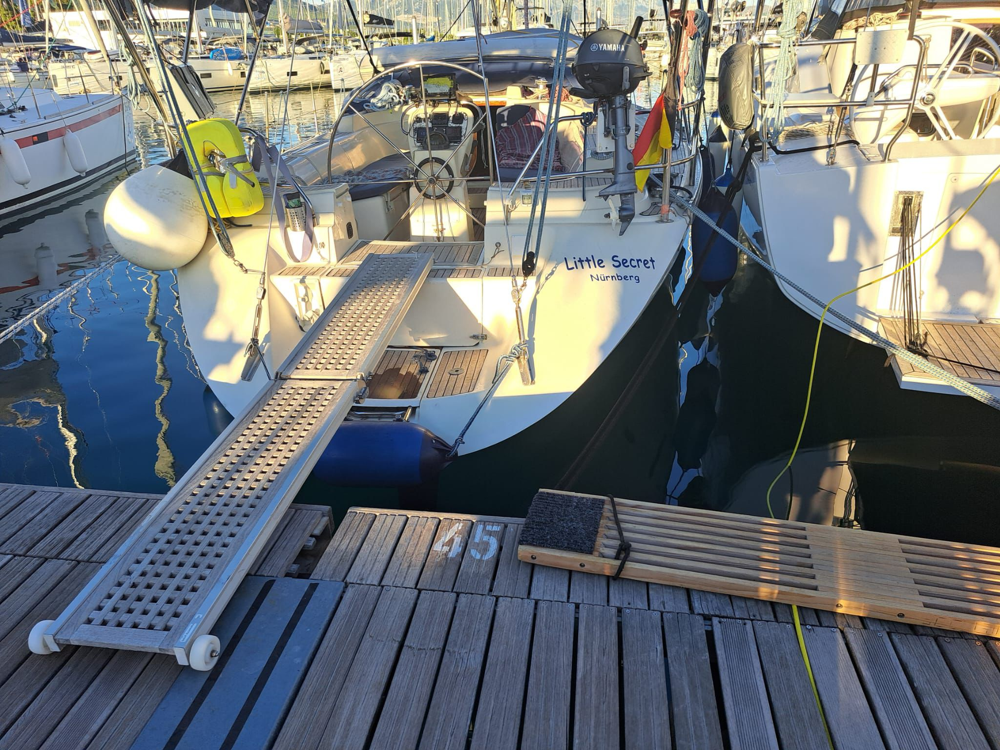
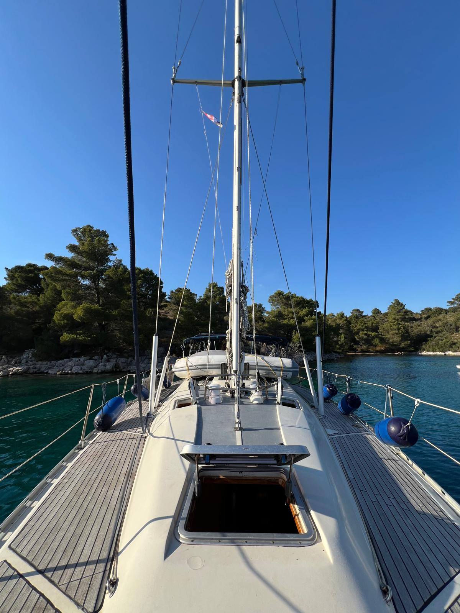
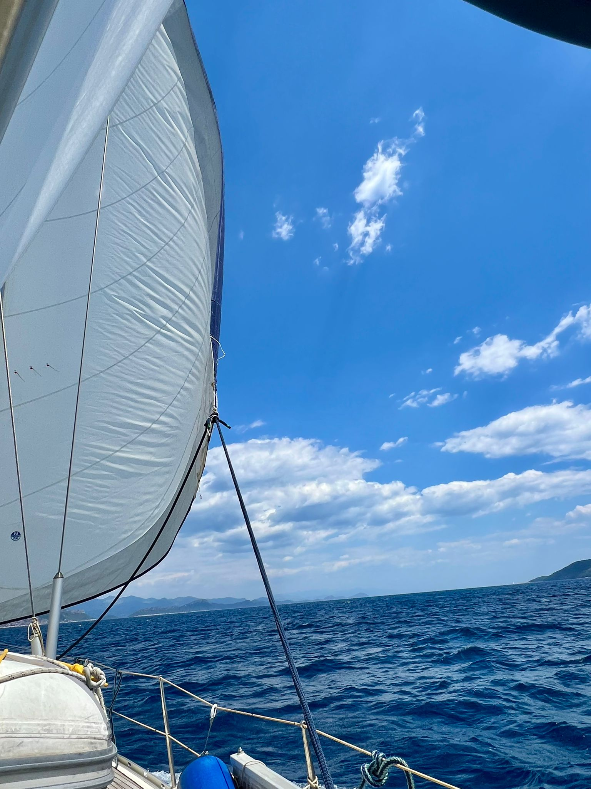

44 ft
Bavaria 44 Holiday
Solide Fahrtenyacht mit viel Raum, klassischem Layout und bewährtem Konzept.
Solid cruising yacht with generous space, a classic layout and a proven concept.
Eine klassische Fahrtenyacht für entspannte Törns, echte Seemannschaft und besondere Momente auf dem Wasser.
A classic cruising yacht for relaxed passages, seamanship and memorable days on the water.
Solide Fahrtenyacht mit viel Raum, klassischem Layout und bewährtem Konzept.
Solid cruising yacht with generous space, a classic layout and a proven concept.
Eine Yacht mit Charakter, Geschichte und viel Potential für kommende Törns.
A yacht with character, history and plenty of potential for future voyages.
Die aktuelle Position wird über das VesselFinder AIS-Widget eingebunden.
Current position is embedded via the VesselFinder AIS widget.
Galerie



